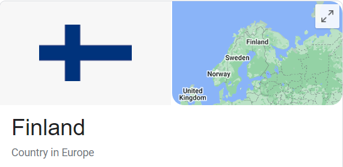

What country is the happiest country on Earth?
Answer: Finland

Culture Fact #39. Finland is the happiest country in the world. The other Nordic nations maintain Finland company in the top eight
spots of the 2022 World Happiness Report.
Finland has been named the happiest nation on Earth by the World Happiness Report for five years in a row, beginning in 2018.